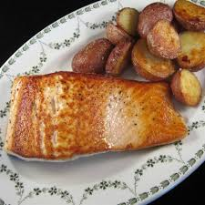
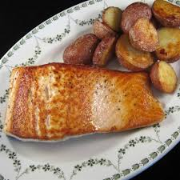

Ensalada de Quinoa
La ensalada de quinoa es una opción saludable y nutritiva, perfecta para quienes buscan una comida ligera y llena de sabor. Se puede combinar con vegetales frescos y un aderezo sencillo.
Ingredientes:
-
1. 1 taza de quinoa
-
2. 2 tazas de agua
-
3. 1 pepino picado
-
4. 1 tomate picado
-
5. 1/2 cebolla morada picada
-
6. 1/4 taza de perejil fresco picado
-
7. 2 cucharadas de aceite de oliva
-
8. Jugo de 1 limón
-
9. Sal y pimienta al gusto
Preparación:
-
1. Lava bien la quinoa bajo agua fría.
-
2. Cocina la quinoa con el agua en una olla, lleva a ebullición y luego cocina a fuego bajo hasta que absorba el agua (aprox. 15 minutos).
-
3. Deja enfriar la quinoa y colócala en un recipiente grande.
-
4. Agrega el pepino, tomate, cebolla y perejil.
-
5. Añade el aceite de oliva, jugo de limón, sal y pimienta.
-
6. Mezcla bien todos los ingredientes y sirve fría.
 
